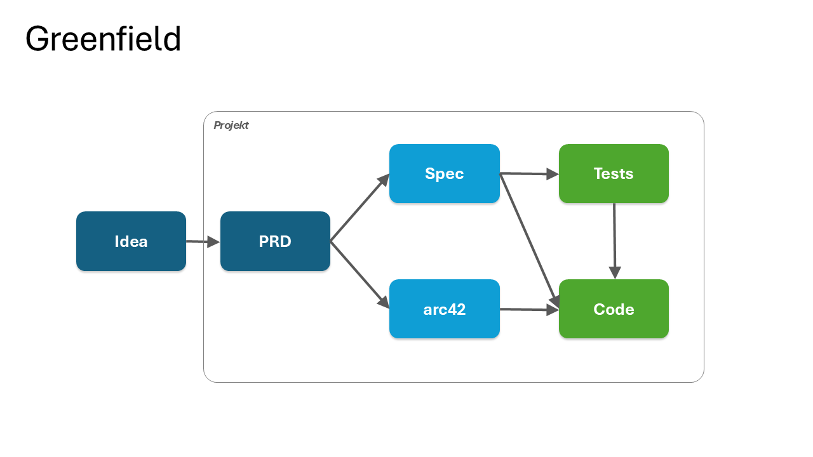
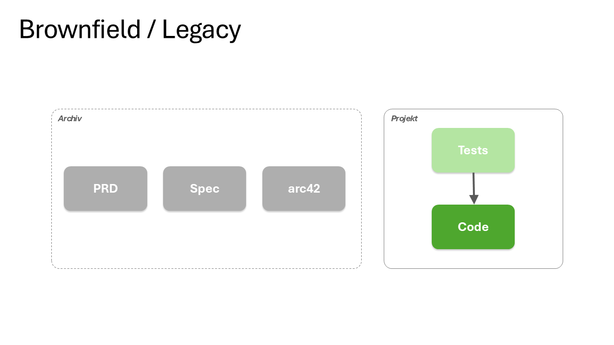
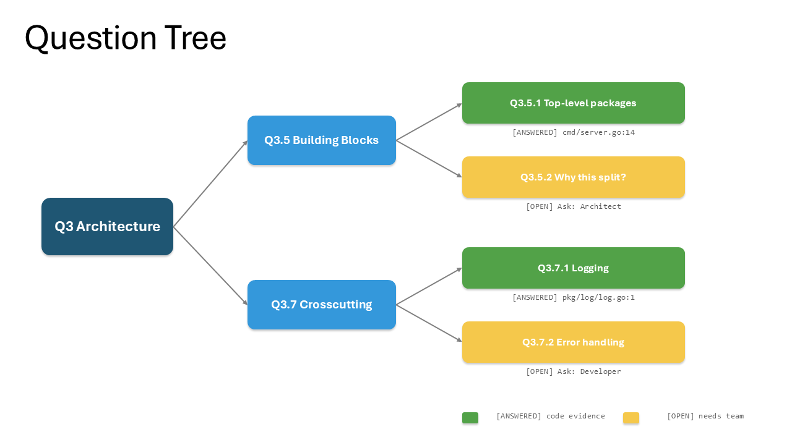
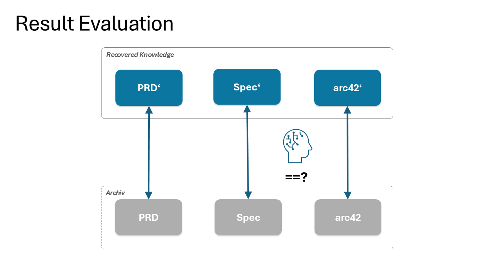

Abstract. Socratic Code-Theory Recovery is a two-phase method for recovering the "theory" (in the sense of Naur, 1985) behind an existing codebase, using a Large Language Model as a structured Socratic interlocutor rather than as an oracle. The method differs from adjacent approaches (SoHF, MIND, Reversa, ArchAgent) along three axes: it is framework-anchored (arc42, Cockburn, ISO 25010, Nygard ADRs serve as decomposition heuristics), it is bounded-context-scoped (per Martinelli's AI Unified Process and Evans' DDD), and it produces dual traceability (Q-IDs to code evidence plus marked team answers). A controlled experiment using a greenfield project as its own ground truth showed that 11 targeted questions were sufficient to recover the theory of a 13 kLoC Go codebase, and that the Question Tree functions empirically as an output constraint, not only as an information-gathering device.
1. Executive Summary
The state of the art in LLM-assisted code-theory recovery splits into three lineages: prompt-pattern Socratic approaches (Chang 2023, MIND 2026, SocREval), conversational human-steering studies (SoHF at EMNLP 2024), and automated recovery pipelines (ArchAgent F1 = 0.97 for structure; Zhou et al. F1 = 0.37 for design rationale). None of these combines structural decomposition, explicit human-handoff routing, and bidirectional traceability.
Socratic Code-Theory Recovery occupies this gap. Its method consists of scoping a bounded context (Phase 0), building a hierarchical Question Tree where every leaf is either [ANSWERED] with code evidence or [OPEN] with a Category and Ask role (Phase 1), routing the OPEN_QUESTIONS.adoc to humans, synthesising arc42 documentation plus ADRs plus Cockburn use cases with Q-ID traceability (Phase 2), and finally writing baseline tests against the recovered use cases. The Question Tree is decomposed using four established frameworks as heuristics, which makes the prompt remarkably compact: one prompt of roughly 70 lines produces a tree that generates around 3850 lines of correctly structured documentation.
The empirical contribution is methodologically novel. Rather than evaluating against human-authored ground truth (always partial, always drifted), the method uses an LLM-documented greenfield project, discards the documentation, and measures recovery fidelity against the discarded original. A fair comparison across three approaches (Direct prompting, Socratic Question Tree only, full Two-Phase) with identical team answers shows that the Question Tree primarily acts as an output constraint: Two-Phase matches the original's 5 ADRs exactly with correct topics and status; Direct over-generates (7 ADRs, 2 hallucinated); Socratic compresses to 21 % of the original's volume with the highest Q-ID density.
Three structural limitations remain. Threat modelling is not surfaced naturally by the four anchor frameworks (Direct is the only variant that produces an explicit Threat Model section), bounded-context identification can fail in Big Ball of Mud codebases, and the discipline of routing [OPEN] leaves to humans rather than letting the LLM "plausibly" fill them is socio-technical, not methodological. This report proposes a fifth anchor (STRIDE) for security, a two-stage Phase 0 for low-modularity codebases, explicit anti-pattern guards in the Phase 2 prompt, and a "Continuous Theory Externalisation" practice that generalises the method beyond brownfield onboarding.
2. Problem Statement
In 1985 Peter Naur argued that programming is theory building: a program is the externalisation of a theory held in the developers' heads, and "the death of a program happens when the programmer team possessing its theory is dissolved" [1]. Forty years later, this observation has become operationally urgent. LLM coding agents (Claude Code, Codex, Cursor, GitHub Copilot) can modify code rapidly, but they perform best when the team's theory is available to them in some written form, typically CLAUDE.md, AGENTS.md, or an arc42 document.
Brownfield projects do not have this artefact. The code exists; the theory exists only in the heads of the original team (if they are still available) or nowhere (if they have left). The naïve response, reverse-engineer the entire system into documentation before changing anything, fails for the same reason Big Upfront Design fails: it is expensive, drifts immediately, and does not target the parts of the system that actually need changing.
Two empirical findings from recent literature frame the difficulty. First, structural architecture recovery via LLM agents now achieves F1 ≈ 0.97 [9], so the structural problem is largely solved. Second, design-rationale recovery from code alone caps out at F1 ≈ 0.37 [11], so the why is structurally unrecoverable from the what. Any practical method must therefore recover structure automatically, route rationale questions to humans, and preserve traceability so that recovered documentation can be audited.
Socratic Code-Theory Recovery is the method this report describes. It is published as part of the Semantic Anchors project [21].
3. Foundations
3.1 Naur and the irreducibility of theory
Naur's claim, building on Ryle's The Concept of Mind (1949), is that theory is "the knowledge a person must have in order not only to do certain things intelligently but also to explain them, to answer queries about them, to argue about them." A crucial corollary is that "an essential part of any program, the theory of it, is something that could not conceivably be expressed", so complete recovery is impossible in principle.
Naur's pessimism has been read in two ways in the LLM era. The strong reading (Gauer, Ratfactor, 2025) is that LLMs process outputs (text, code, documentation) but not the process of theory making, so they cannot have theory and cannot recover it. The weaker reading (Goedecke, Bayer, 2025) is that LLMs can carry theory once it has been externalised by humans into structured form (CLAUDE.md, ADRs, arc42), and that the practical question is how to externalise it well. The position developed in Section 8 is closer to a Rylean operational stance: theory shows itself in successful continued development.
3.2 Classical program comprehension
The cognitive scaffolding for any recovery method comes from program-comprehension research developed between 1979 and 1995: Brooks (top-down hypothesis-driven), Pennington (program model and situation model), Soloway and Ehrlich (plans and rules of discourse), and von Mayrhauser and Vans' integrated metamodel. Sillito et al. (TSE 2008) catalogued 44 question types programmers ask during software evolution, organised into four categories: finding focus points, expanding focus points, understanding a subgraph, and questions over groups of subgraphs [4].
For this purpose, the relevant empirical bound is Xia et al.'s field study: professional developers spend about 58 % of their working time on program comprehension [24]. Any method that reduces this fraction by improving recovery quality has substantial practical value.
3.3 The Brownfield Paradox
The Semantic Anchors project formulates the trap that motivates the method:
"In greenfield projects, you write the spec first and the code follows. In brownfield projects, the code already exists, but the spec often does not. The system is the specification, except nobody can read it."


The temptation, to reverse-engineer the entire system into documentation before any change, is Big Upfront Documentation, with the same failure mode as Big Upfront Design. The escape is to specify only the bounded context about to be changed, and only enough of it to change it safely.
4. The Method
4.1 The Workflow at a Glance
The workflow has six steps: scope a bounded context (Phase 0), build the Question Tree with code evidence and open leaves (Phase 1), route the open leaves to the team by Ask role, synthesise documentation with Q-ID traceability (Phase 2), write baseline tests, then apply the standard spec-driven workflow for further development. Each step is described below.
4.2 Phase 0: Scope a Bounded Context
The first decision is where to start. A bounded context, in Evans' sense, is a coherent slice of the domain with clear boundaries: a module, a service, a feature area, or a screen. The criterion for choosing one is operational, not architectural: pick a context that is small enough to fit in a single recovery session and has a pending change request. Skipping this phase, attempting to recover the whole system at once, is the most common reason brownfield recovery efforts fail.
The LLM can assist by analysing the codebase and listing candidate bounded contexts with responsibilities, key entities, and interfaces. In healthy codebases this works well. In Big Ball of Mud codebases it may not (see Section 10.3).
4.3 Phase 1: The Question Tree
Phase 1 is the structural core of the method. Five high-level questions about the bounded context are decomposed recursively using four Semantic Anchors as decomposition heuristics:
| Branch | Anchor |
|---|---|
| Q1 Problem and users | free-form, the LLM elaborates |
| Q2 Specification | Cockburn use cases (Primary Actor, Trigger, Main Success Scenario, Extensions, Postconditions) |
| Q3 Architecture | arc42 (12 sub-questions corresponding to the 12 chapters) |
| Q4 Quality goals | ISO/IEC 25010 (8 quality characteristics) |
| Q5 Risks and technical debt | free-form, the LLM elaborates |
ADRs sit under Q3.9 (architecture decisions) and use Nygard's template (Context, Decision, Status, Consequences). The decomposition stops when a leaf can be answered by a single piece of code evidence or a single fact from a stakeholder.
Each node gets a hierarchical Q-ID (Q1, Q1.2, Q1.2.3, …) so that the synthesised documentation in Phase 2 can cite back to the question that motivated each claim.
Every leaf is classified. An [ANSWERED] leaf cites code evidence as <file>:<line> or <file>::<function>. An [OPEN] leaf specifies a Category (business-context, design-rationale, quality-goals, stakeholder-context, future-direction) and an Ask role (Product Owner, Architect, Developer, Domain Expert, Operations).

The output of Phase 1 is two AsciiDoc files: QUESTION_TREE.adoc with the full tree and reasoning, and OPEN_QUESTIONS.adoc with only the open leaves, grouped by Ask role, each phrased to be answerable in 1 to 3 sentences.
A short excerpt from QUESTION_TREE.adoc shows the format:
Q3.5.1 Top-level packages
[ANSWERED] cmd/server.go:14
Three packages: cmd/ for entrypoints, pkg/ for the public API,
internal/ for non-exported domain logic.
Q3.5.2 Why this split?
[OPEN] Category: design-rationale
Ask: Architect
Why was internal/ chosen over a flat layout? Were alternatives considered?Phase 2 will later cite Q3.5.1 as evidence for the building-block-view chapter and treat Q3.5.2 as a routed open question whose answer becomes an ADR.
4.4 Between Phases: Team Routing
The bridge between the two LLM phases is human work. OPEN_QUESTIONS.adoc is routed by Ask role to the people who can answer. The empirical anchor for the cost of this step comes from a controlled experiment on a 13 kLoC Go codebase: 11 targeted questions were sufficient to close the gap. The questions are precise because the recursive decomposition forces them to be specific rather than vague.
Typical categories that show up as [OPEN]:
| Category | Example |
|---|---|
| Business Context | Why was this built? What alternatives existed? |
| Design Rationale | Why JSONC instead of YAML? Why this library? |
| Quality Goals | Which quality goal has priority? What are the thresholds? |
| Stakeholder Context | Who uses this? What is their skill level? |
| Future Direction | What is planned but not yet implemented? |
4.5 Phase 2: Synthesis with Dual Traceability
Phase 2 takes the answered Question Tree plus the team's answers and produces documentation aligned to the spec-driven workflow:
- PRD from the Q1 branch
- Cockburn use cases, CLI spec, data models, Gherkin acceptance criteria from the Q2 branch
- arc42 with all 12 chapters from the Q3 branch
- Nygard ADRs (with optional Pugh Matrix for trade-offs) from the Q3.9 branch
- Quality scenarios from the Q4 branch
- Risk register from the Q5 branch
Every claim in the synthesised documentation references the Q-ID that motivated it. Team-provided information is marked (team answer). This dual traceability, code evidence plus team input, both addressable by Q-ID, is the structural feature that distinguishes the method from any of the adjacent approaches.
4.6 Baseline Tests and Spec Reconciliation
Once use cases exist, the LLM writes tests that verify the current behaviour, with each test referencing its use case ID. These tests must pass against the unchanged code; a failing baseline test means the extracted use case was wrong and must be corrected first. Without baseline tests, subsequent changes cannot distinguish between "my change broke something" and "it was already broken."
Even with full documentation in place, the specification will drift from the code over time. The implementation LLM adds validation rules, security hardening, and edge cases that were not in the original spec. The fix is periodic spec reconciliation: re-run the recovery prompt against current code and diff against the existing spec. The diff reveals NEW (in code, not in spec), CHANGED (diverged), and DEAD (in spec, not in code). Three natural triggers: before a release, after a security review, before onboarding a new contributor.
5. State of the Art: Adjacent Approaches
This section consolidates the comparison landscape as of May 2026. Four lineages are relevant.
5.1 Prompt-Pattern Socratic Approaches
Edward Y. Chang (CCWC 2023, arXiv:2303.08769) named six Socratic moves usable as prompt templates: definition, elenchus, dialectic, maieutics, generalisation, and counterfactual reasoning [5]. These are conversational moves, not structural decompositions. MIND (Della Porta et al., MSR 2026 Registered Reports) embeds three self-questions in code-task prompts: clarify the task, identify missing information, check intermediate conclusions [8]. SocREval (Hong et al.) uses Chang's moves to make an LLM-as-judge evaluate reasoning chains. SocraticAI (Princeton, 2023) uses three role-played agents (Socrates / Theaetetus / Plato) for collaborative problem solving.
All four work at the level of an individual prompt or dialogue; none of them produces an artefact comparable to a Question Tree, and none of them targets brownfield comprehension as such.
5.2 Conversational Human-Steering
The most rigorous empirical study is SoHF (Chidambaram et al., EMNLP 2024 Findings) [6]. Expert programmers worked across GPT-4, Gemini Ultra, and Claude 3.5 Sonnet; in aggregate they succeeded on 74 % of the problems the models initially failed to solve on their own. The five named feedback stages, Definition, Elenchus, Maieutic, Dialectic, Counterfactual, map to nine concrete steering strategies.
Kargupta et al. (EMNLP 2024) target Socratic code debugging with multi-turn planning and hierarchical questioning [7].
Both are about steering an LLM through a single task; neither addresses recovery of an existing codebase's theory.
5.3 Recovery Pipelines
ArchAgent (Pan et al., arXiv:2601.13007, Jan 2026) [9] combines static analysis, adaptive code segmentation, and LLM synthesis to reconstruct multi-view, business-aligned architectures. On 8 large GitHub projects, ArchAgent reaches mean F1 = 0.966 (σ = 0.025) against DeepWiki at 0.860 (σ = 0.067), paired t-test p = 0.0036. ArchAgent is excellent at structure and does not address rationale, quality goals, or stakeholder concerns.
Reversa (github.com/sandeco/reversa) is the closest functional comparator. It orchestrates around a dozen specialist sub-agents (Scout, Archaeologist, Detective, Architect, Writer, Reviewer, and others) and labels outputs CONFIRMED, INFERRED, or GAP. It is heavier than Socratic Code-Theory Recovery (multi-agent orchestration, prompt-engineering complexity) and does not produce a Question Tree as a first-class artefact; the human handoff is implicit rather than structurally enforced.
Ouf et al. (arXiv:2509.19587, Sep 2025) [10] report F1 ≈ 0.8 for user-story recovery on 1750 annotated C++ snippets at or below 200 NLOC, with performance degrading on longer code.
Zhou et al. (arXiv:2504.20781) [11] evaluate 5 LLMs across 3 prompting strategies on 100 architecture problems for design rationale recovery: precision 0.27 to 0.28, recall 0.63 to 0.72, F1 0.35 to 0.39. This is the empirical anchor for why fully automated rationale recovery is not yet viable.
5.4 Practice: CLAUDE.md, AGENTS.md, arc42-copilot
Outside the academic literature, a practice pattern has crystallised: agents read and write context files (CLAUDE.md for Claude Code, AGENTS.md for Codex, now stewarded by the Linux Foundation's Agentic AI Foundation) that externalise the team's understanding of the system. Anthropic's "Effective context engineering for AI agents" endorses this pattern explicitly. The awesome-arc42-copilot repository [23] provides LLM prompts aligned to the 12 arc42 sections plus the Q42 quality model.
These practices answer "what artefact carries the theory" but not "how do you produce the artefact when only code exists."
6. Comparison: Positioning the Method
6.1 Comparison Matrix
| Dimension | Chang / MIND | SoHF | ArchAgent | Reversa | Socratic CTR |
|---|---|---|---|---|---|
| Targets brownfield recovery | no | no | yes | yes | yes |
| Bounded-context scoped | no | no | no | partial | yes |
| Framework-anchored decomposition | no | no | no | no | yes |
| Explicit human handoff artefact | no | n/a | no | partial | yes |
| Q-ID bidirectional traceability | no | no | no | no | yes |
| Resolution log | no | no | no | no | yes |
| Multi-agent orchestration | no | no | yes | yes | optional |
| Empirical recovery benchmark | n/a | task-only | structural F1 0.97 | n/a | greenfield-inversion |
| Token efficiency (output / original) | n/a | n/a | full | full | 21–35 % |
6.2 Where the Method is Unique
Three properties of Socratic Code-Theory Recovery have no exact counterpart in the literature.
The first is framework-anchored decomposition. Other approaches use prompt patterns (Chang's six moves; MIND's three self-questions) or agent roles (Reversa's specialist sub-agents). Socratic Code-Theory Recovery uses four widely understood software-engineering frameworks as decomposition heuristics. The prompt that drives Phase 1 is short, under 70 lines, because arc42 already implies the 12 architectural sub-questions, ISO 25010 already implies 8 quality characteristics, and so on. The vocabulary does the work that prompt verbosity would otherwise have to do.
The second is explicit human-handoff routing. Reversa labels outputs INFERRED or GAP, but the gap is a marker on a document, not an actionable artefact. Socratic Code-Theory Recovery produces OPEN_QUESTIONS.adoc, grouped by Ask role, where each question is short and specific enough for a domain expert to answer in 1 to 3 sentences. This converts the philosophical limit (Naur: theory cannot be fully expressed) into an operational workflow.
The third is dual traceability. Every claim in the synthesised documentation has both a Q-ID (linking it to the question that motivated it) and, where applicable, a (team answer) marker indicating that the source is a human, not the code. This makes the documentation auditable: a reader can ask, for any claim, "where does this come from?" and the answer is in the document itself.
6.3 Empirical Positioning from the Fair Comparison
The Fair Comparison Report [22] ran three variants, Direct prompting, Socratic (Question Tree only), and full Two-Phase, against the same codebase with identical team answers. The headline numbers:
| Metric | Direct | Socratic | Two-Phase |
|---|---|---|---|
| Total lines (adoc) | 3,886 | 2,481 | 4,083 |
| Compression vs Original | 33 % | 21 % | 35 % |
| ADRs | 7 | 3 | 5 |
| ADR topics match Original | no | no | yes |
| Q-ID references | 101 | 123 | 109 |
| Team-answer markers | 26 | 35 | 50 |
| Open questions remaining | 0 | 0 | 0 |
| Threat model in Ch. 10 | yes | no | no |
Three observations.
Team answers, not the structure, determine information completeness. All three approaches achieved zero remaining open questions, performance budgets, quality goal priorities, and correct competitive context. This means the recovery problem is, with respect to information, an answer-routing problem.
The Question Tree constrains output, not only information. Two-Phase exactly matched the original's 5 ADRs with correct topics and status (including ADR-004 Rejected) because Phase 1 asked "which ADRs exist?" and the team answer locked in the topics. Without that constraint, the Direct approach generated 7 ADRs (2 hallucinated). This is the strongest empirical case yet for structured Socratic decomposition over free-form prompting.
Volume control is real and matters. Socratic compresses to 21 % of the original's volume while keeping all essentials. For agentic downstream consumption, where the synthesised documentation later enters another LLM's context window, this is not a stylistic preference but an economic one.
7. Empirical Methodology: The Greenfield Inversion
7.1 The Problem with Conventional Ground Truth
Brownfield recovery has no obvious ground truth. Human-authored documentation is typically incomplete, drifted, or both. Asking the original team to validate recovered documentation is unreliable: they cannot remember what they once knew, and confirmation bias is high. Measuring recovery "quality" against a moving or fictional target is methodologically weak.
7.2 The Inversion
Socratic Code-Theory Recovery's evaluation uses a different reference frame. The starting point is a greenfield project where the LLM produced complete documentation as part of the spec-driven workflow. This documentation has been validated operationally: the LLM was able to continue building the software using it. By the Rylean criterion, knowing-how shows itself in successful action, the documentation carries operationally sufficient theory.
The experiment then deletes the documentation, treats the remaining code as a brownfield codebase, runs the recovery method, and compares the recovered documentation against the deleted original. This avoids the moving-target problem entirely. The original was complete, drift-free, and operationally validated. The recovered version can be compared exactly.

7.3 Why This Is Stronger Than It First Looks
A natural objection is "same-LLM bias": the recovery LLM might find it easier to reconstruct documentation in a style the same model previously produced. This objection is weaker than it appears, for three reasons.
First, internal validity is preserved across the three approaches under comparison. Direct, Socratic, and Two-Phase all face the same potential bias. Differences between them therefore measure the structural property under test (the value of the Question Tree, the value of the two-phase split) rather than model-specific affinities.
Second, the ground truth itself is better than typical human-authored alternatives. Most human-written brownfield documentation suffers from selection bias (people document what they remember), drift (the code moves and the docs do not), and the tacit-knowledge assumption (writers omit context they assume readers share). LLM-generated greenfield documentation, by construction, has section coverage from the template, is drift-free to the time of generation, and is explicit because the LLM does not assume shared context. For the purposes of "what counts as adequate theory documentation," it is arguably a better reference than typical human documentation, not a compromise.
Third, the operational test underlying the greenfield project is the strongest evidence available. If the LLM successfully continues development using its own documentation, then in a Rylean sense the documentation carries the theory. Anything stronger, "but it might not capture the real theory", presupposes a non-operational notion of theory that Ryle (and arguably Naur) reject.
A modest extension would replicate the experiment using a different LLM for the original greenfield documentation than for the recovery, to rule out same-model affinity quantitatively. This is a useful addition, not a methodological prerequisite.
8. The Naur Debate, Revisited
8.1 Two Camps
The Naur-versus-LLM debate, currently the most contested methodological question in this area, has two camps.
The strong-Naur camp (Gauer, Ratfactor; partial echoes in Cekrem) reads Naur through Ryle's knowing-how vs knowing-that distinction and argues that LLMs, having trained on outputs only, cannot have built the theory and therefore cannot recover it. Documentation produced by an LLM is at best a plausible reconstruction, never the theory itself.
The operational camp (Goedecke, Bayer) accepts Naur's diagnosis but argues that the practical question is how to externalise the theory effectively so that LLMs can amplify, rather than replace, human theory-building. CLAUDE.md becomes, in Bayer's phrasing, the place where the team's theory of the program is recorded.
8.2 Our Position
Socratic Code-Theory Recovery's position aligns with a third reading: a Rylean operational stance that is consistent with Naur's text but rejects the strong-Naur interpretation.
Ryle's original argument in The Concept of Mind is anti-mentalist. For Ryle there is no privileged inner theory hiding behind successful performance; the performance is the theory's expression. Asking whether an LLM "really" has theory, separately from whether it can act as if it does, is the kind of question Ryle would have dismissed as a category mistake.
Applied to brownfield recovery, this yields a clear position:
- The strong-Naur claim ("theory cannot be expressed at all") is empirically falsified to the extent that documented systems are successfully maintained. Some theory is in the documentation; some is in the heads.
- The question is operational: which parts of the theory are in the code, which are derivable from the code, and which require a human? Socratic Code-Theory Recovery answers this with the
[ANSWERED]/[OPEN]classification. - Naur's irreducibility holds for some theory components, the tacit, the unargued, the never-considered-alternatives. These are exactly the categories that surface as
[OPEN]leaves withAsk: ArchitectorAsk: Domain Expert. - The method does not refute Naur. It operationalises his limit.
This is a stronger position than either of the existing camps, and it has a methodological consequence: the validity of the method does not depend on resolving the philosophical debate about what LLMs "really" know. It depends only on whether the produced documentation, plus the routed open questions, plus the team answers, allows continued development.
9. Limitations
9.1 Threat-Model Blind Spot
The Fair Comparison Report identified a single recurring structural gap: Direct prompting produces an explicit Threat Model section in arc42 Chapter 10 with three trust boundaries; Socratic and Two-Phase do not. The information is equivalent (all three name the relevant security mechanisms), but only Direct surfaces a named Threat Model.
The cause is structural, not a prompt-engineering bug. arc42 distributes security across Chapter 8 (crosscutting concerns) and Chapter 10 (quality scenarios); ISO 25010 treats security as a quality characteristic; Nygard ADRs are decision-centric, not threat-centric. None of the four decomposition anchors prompts the LLM to produce a STRIDE-style trust-boundary analysis. The pragmatic workaround (Direct follow-up for security-critical projects) treats the symptom; a structural fix is described in Section 10.1.
9.2 OPEN-Leaf Discipline Risk
The method's value depends on the discipline of routing [OPEN] leaves to humans rather than letting the LLM fill them with plausible inferences. This is a socio-technical risk, not a methodological one. An [OPEN] leaf filled by the LLM is worse than an unanswered one because it cannot be distinguished from team-confirmed knowledge by a downstream reader, the dual traceability is silently broken.
The current Phase 1 prompt does not explicitly prohibit this behaviour. A short addition (see Section 10.2) closes the gap.
9.3 Bounded-Context Identification
Phase 0 assumes that bounded contexts are identifiable in the codebase. For healthy codebases this is realistic; for Big Ball of Mud systems it may not be. The method does not currently distinguish "the LLM identified bounded contexts well" from "the LLM imposed bounded contexts that do not really exist." Wrong contexts at Phase 0 produce locally coherent but globally misleading recovery.
This is the single most important scalability risk for the method. If bounded contexts are reliable, the per-context recovery scales over the whole codebase. If they are not, no amount of per-context quality compensates.
9.4 Domain Generalisation
The empirical evidence currently rests on a single greenfield-inverted codebase (13 kLoC, Go). The methodology is sound, but generalisation to other languages, domains, and team-size conventions remains to be demonstrated. A modest replication across 3 to 5 codebases would close this gap.
10. Proposed Extensions
10.1 Add a Fifth Anchor: STRIDE for Security
The cleanest fix for the threat-model blind spot is to add a fifth, optional decomposition anchor for security. STRIDE is the natural choice: it is widely known, it is concise (six mnemonic categories), and it surfaces trust boundaries explicitly. The proposed addition to Phase 1:
Q6 What is the threat model? (optional, security-relevant systems)
Q6.1 Spoofing — where does identity authentication happen?
Q6.2 Tampering — what data is mutable and by whom?
Q6.3 Repudiation — what is logged or signed?
Q6.4 Information Disclosure — what data has confidentiality requirements?
Q6.5 Denial of Service — which components are availability-critical?
Q6.6 Elevation of Privilege — what authorisation boundaries exist?This branch should be opt-in (set by a flag at Phase 0) so that non-security-critical projects retain a lightweight tree.
10.2 Anti-Pattern Guards
Two short additions to the existing prompts close the OPEN-leaf discipline gap.
In Phase 1, after the leaf classification instructions:
Do NOT fill [OPEN] leaves with plausible inferences. An [OPEN] leaf with
an LLM-generated answer is worse than an empty one, because it cannot be
distinguished from team-confirmed knowledge in downstream documentation.
If the answer is not derivable from code with file:line evidence, classify
[OPEN].In Phase 2, before synthesis:
Before synthesising, verify that every claim marked (team answer) corresponds
to an entry in the answered Open Questions document. Do not introduce
(team answer) markers for content that has no source in either code or
answered questions.10.3 Two-Stage Phase 0 for Low-Modularity Codebases
Phase 0 should distinguish "DDD-decomposable" codebases from "Big Ball of Mud" codebases before attempting bounded-context identification.
Phase 0a: Modularity Assessment. Compute coupling, cohesion, package-level cyclomatic dependencies, and import-cluster structure. Output a modularity score and a recommendation: DDD-decomposable, refactoring-first, or vertical-slice-recovery.
Phase 0b: Fallback to Vertical Slices. If modularity is too low for sound bounded-context identification, fall back to recovering a single end-to-end use case as the unit of recovery, rather than a module. This aligns with Feathers' Working Effectively with Legacy Code and is more realistic for the codebases that most need the method.
10.4 Continuous Theory Externalisation
The most ambitious extension reframes the method beyond brownfield onboarding. If LLM-generated documentation operationally carries theory (per the greenfield evidence), and if spec drift can be detected and reconciled, then the same machinery can run continuously: on every merge to main, regenerate the affected documentation, diff against the previous version, and surface drift as NEW, CHANGED, or DEAD findings to the team.
This generalises Naur's claim from a one-time observation about brownfield risk to an ongoing maintenance practice. A program need not "die" when its team dissolves if the team has continuously externalised its theory into machine-checkable, LLM-regenerable form.
This is a research direction more than a feature, but it is the natural endpoint of the method's logic.
11. Recommendations
For teams adopting Socratic Code-Theory Recovery in 2026:
- Start with one bounded context, with a pending change request. Never attempt full-system recovery upfront. Incremental coverage emerges naturally over 3 to 10 contexts.
- Use the Two-Phase variant for production-quality documentation where ADR fidelity and traceability matter. Use the Socratic-only variant when the goal is gap-finding (cheapest way to produce the targeted team questions). Use Direct prompting only when no team access is available and you accept some over-generation.
- Treat
[OPEN]leaves as work, not as failure. A high count of[OPEN]leaves in Phase 1 is a sign the method is functioning: it surfaces what code cannot answer. Route them by Ask role and budget human time accordingly. - Add baseline tests before any modification. Without them, the safety net is missing and brownfield changes carry needless risk.
- Schedule spec reconciliation at three natural triggers: before a release, after a security review, before onboarding. Treat reconciliation as a regular practice, not a one-time activity.
- For security-critical systems, either use the proposed STRIDE extension (preferred once published) or run a Direct-prompt follow-up specifically for trust boundaries and threat model.
- Version-control all generated artefacts (
QUESTION_TREE.adoc,OPEN_QUESTIONS.adoc, the synthesised arc42, ADRs, baseline tests). Treat them as first-class repository content, not as ephemeral LLM output.
12. Conclusion
Socratic Code-Theory Recovery is, as far as the May 2026 literature shows, the first method to combine structural decomposition through established software-engineering frameworks, explicit human-handoff routing, and bidirectional Q-ID traceability into a single brownfield-onboarding workflow. It operationalises Naur's irreducibility claim rather than arguing past it: the [OPEN] leaves are the theory residue that no amount of code analysis can recover.
The empirical contribution, using a greenfield-inverted codebase as ground truth, is methodologically novel and arguably stronger than evaluation against human-authored documentation. The Fair Comparison demonstrates that the Question Tree functions as an output constraint: Two-Phase reproduces the original's ADR structure exactly while unconstrained Direct prompting hallucinates additional artefacts.
Three structural risks remain: threat modelling is not surfaced by the four decomposition anchors; Big Ball of Mud codebases break bounded-context identification; and the discipline of routing [OPEN] leaves to humans is socio-technical, not methodological. Four extensions address them: a STRIDE branch for security, anti-pattern guards in the prompts, a two-stage Phase 0 for low-modularity codebases, and a continuous-externalisation generalisation that turns the method from one-shot recovery into ongoing practice.
The longer-term significance is not the method itself but the methodological pattern it establishes. LLM coding assistants do their best work when the team's theory is externalised in structured, machine-readable form. Socratic Code-Theory Recovery is one answer to the question that pattern raises: how do you produce the externalised theory when only code exists?
References
- Naur, P. (1985). "Programming as Theory Building." Microprocessing and Microprogramming 15(5):253–261.
- Ryle, G. (1949). The Concept of Mind. London: Hutchinson.
- Biggerstaff, T. J. (1989). "Design Recovery for Maintenance and Reuse." IEEE Computer 22(7):36–49.
- Sillito, J., Murphy, G. C., De Volder, K. (2008). "Asking and Answering Questions during a Programming Change Task." IEEE TSE 34(4):434–451.
- Chang, E. Y. (2023). "Prompting Large Language Models with the Socratic Method." IEEE CCWC / arXiv:2303.08769.
- Chidambaram, S. et al. (2024). "Socratic Human Feedback (SoHF): Expert Steering Strategies for LLM Code Generation." Findings of EMNLP 2024:15491–15502.
- Kargupta, P. et al. (2024). "Instruct, Not Assist: LLM-based Multi-Turn Planning and Hierarchical Questioning for Socratic Code Debugging." Findings of EMNLP 2024.
- Della Porta, A. et al. (2026). "Ask, Then Think: Enhancing LLM Performance with Socratic Reasoning." MSR 2026 Registered Reports / SSRN 6167610.
- Pan, R. et al. (2026). "ArchAgent: Scalable Legacy Software Architecture Recovery with LLMs." arXiv:2601.13007.
- Ouf, M. et al. (2025). "Reverse Engineering User Stories from Code using Large Language Models." arXiv:2509.19587.
- Zhou, X. et al. (2025). "Using LLMs in Generating Design Rationale for Software Architecture Decisions." arXiv:2504.20781.
- Feathers, M. (2004). Working Effectively with Legacy Code. Prentice Hall.
- Evans, E. (2003). Domain-Driven Design: Tackling Complexity in the Heart of Software. Addison-Wesley.
- Starke, G., Hruschka, P. arc42 Template. https://arc42.org
- Nygard, M. (2011). "Documenting Architecture Decisions."
- Martinelli, S. AI Unified Process. https://unifiedprocess.ai
- Anthropic. "Effective context engineering for AI agents." (2025).
- Gauer, D. "Go read Peter Naur's 'Programming as Theory Building' and then come back…" ratfactor.com/cards/naur-vs-llms
- Bayer, P. (2025). "How I use Claude Code."
- Goedecke, S. (2025). "Programming (with AI agents) as theory building."
- LLM Coding Community. Semantic Anchors – Brownfield Workflow. llm-coding.github.io/Semantic-Anchors/brownfield
- LLM Coding Community. Semantic Anchors – Fair Comparison Report. llm-coding.github.io/Semantic-Anchors/brownfield-fair-comparison
- MSiccDev. awesome-arc42-copilot. github.com/MSiccDev/awesome-arc42-copilot
- Xia, X. et al. (2018). "Measuring Program Comprehension: A Large-Scale Field Study with Professionals." IEEE TSE.
LinkedWild